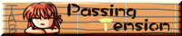
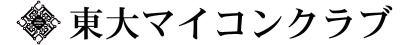
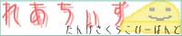

[相互リンク] あおへびさんの萌え萌えページ。サミー関係のページはなくなっちゃったけど、ギャルゲー系のネタは充実してます（笑。かわいらしい絵柄も健在。 | |
| MNA-NET | MNAさんのページ。最近は超硬派シューティングZeN-IchIを作ってます。イベントではおじゃ魔女なぬいぐるみを持って売り子をしてたりして、その趣味のギャップがまた（笑。 |
- 今は昔… -
[相互リンク] あおへびさんの萌え萌えページ。サミー関係のページはなくなっちゃったけど、ギャルゲー系のネタは充実してます（笑。かわいらしい絵柄も健在。 | |
| MNA-NET | MNAさんのページ。最近は超硬派シューティングZeN-IchIを作ってます。イベントではおじゃ魔女なぬいぐるみを持って売り子をしてたりして、その趣味のギャップがまた（笑。 |
- その後各方面で活躍してます -
| Isaki's X680x0 Page. | [相互リンク] 井崎さんのホームページ。X680x0用に多くの通信ソフトを開発してます。 |
| フリーソフトウエア・フルパワー全開ページ | [相互リンク] X680x0回では神様的存在の小笠原氏のページです。Ko-Windowの開発者でもあり、日本でもっとも多くのフリーソフトを作っている人といっても過言ではないでしょう。 |
[相互リンク] Ko-Window系サイト。プログラムが結構おいてあります。最近だとWonderWitch系の話題が増えたみたいですね。 | |
| Windows用のZ-MUSICプレイヤー、XMIDIがあります。 | |
| 吉田研究所＠世田谷 | [相互リンク] 伝説のシューティング「超連射」の作者、よっしんさんのページ。ゲーム開発者必見のサイトですよ！ |
- 魅惑のウェアラブル・コンピューティング -
| IMAI, Hiroei Page | ここでFreeBSD用のRuputer開発環境が紹介されています。また、このかたはrutoolsの作者でもあります。 |
| Naoya Kawahara HomePage | このページにはRuputer用の恵梨沙フォントや多くのプログラムがあります。 |
- 縁に連るれば唐の物を食う -
[相互リンク] やむっさんのサイト。絵描きさんとして同人では活躍されてますが、本業はプログラマだったりする多芸なお方。 | |
[相互リンク] 元アニメーターKITTさんのホームページ。野人の會のおやぶん（笑 | |
[相互リンク] ぴよみずさんのページ。一緒に「秋葉原 HotLoveInception」開発させていただきました。彼がプロジェクトリーダーで、担当はシナリオ。シナリオライター目指して頑張ってます。 | |
| 34番Gate | [相互リンク] Cardinalsんのホームページ。野球の話題中心なのです。 |
[相互リンク] JOHN!さんのホームページ。いつもお世話になってます。うちの初代デスクトップマシンは彼に作ってもらいました:) 今も自宅のサーバーマシンとして活躍してまっす。 | |
| いたちと椎茸の躊躇い | [相互リンク] おーとりゆーきさんのホームページ。ドール系サイトです。家が近いんで良く自転車で遊びに行ってます(^^)。いっしょ飯喰いに行ったりすることも多いっすね。 |
[相互リンク] DASさんのホームページ。DASさんとも良く一緒に出かけたりします。いつも車出してもらって大助かり。一緒にバンドやる予定...だったんだけど、なんか自然消滅しそうだなぁ...（俺のせい？）。ちなみにギター使いです。 | |
| ing! | ついんちゃんのホームページ。彼も一緒にバンド（以下略）...。爆走郵便局員で大食い番長。事故起こさないでね（笑。 |
| まっこやのほむぺ | まっこや大佐のサイト。ドラマーです。めっちゃパワフル。いつもお世話になってます。 |
- まったくもって品の無い人たちデス:P -
| すのうはうす主催者ゆきのん。萌絵描き屋さんであり、かつ優秀なコンピュータエンジニア。牛角仲間っつーか、中華部仲間っつーか。 | |
| 猫目埠頭 | ゆんゆんのページ。彼のプログラムには美学があります。仕事でもお世話になってますヨ!? |
|  | MIDIの偉い人、ヨーグルトさん。最近はプロになっちゃったけどナ。 |
| Fan Fan Diary | Triumphal～の主催者ふぁんの人。彼も雲の上に飛んでいってしまいますた。 |
| GO's ROOM | プログラマー、絵描きとしても名高いごうさんのページ。ゆんゆんと並び博識です。 |
| ギャルゲーマーは２Ｄ美少女の夢を見るか？ | ライターのみょるにるさん。 |
| Be Ready? | BeOSを日本に普及させた人物の一人、ごろ～さん。最近はもっぱらダメ系な人。 |
[相互リンク] 漫画家＆声優の児玉さんのページ。リカヴィネとアンテナのバナー、ありがとー。 | |
| ゆーしゃ（別名、ひちさとじゅん）様のページ。大きな声では言えませんが、いろいろとお世話になっているのですよー。 | |
| 硝子の匣 | 武闘派エロ絵師、甲斐マン。 |
| 武闘派エロ人間、じぇむマン。 |
- お世話になった人々に感謝 -
| ASAHIネット 様。一時期社員として働いていました。 | |
| M2 | M2 様。最近もっぱらお世話になってます。 |
| Basiscape Co.,Ltd. | Basiscape Co.,Ltd. 様。崎元 仁さま、岩田国治さま、並木 学（さんたるる）さまの御三家が作られた会社です。 |
| 株式会社アルカディアエンターテイナー | 株式会社アルカディアエンターテイナー 様。FKS2最高です!! |
| 株式会社ブロッコリー 様。でじこ産みの親。さらなる発展を（切に）願ってやみません。 | |
| BEATCRAFT,Inc. | BEATCRAFT,Inc 様。 |
| Digital Arts Inc. | Digital Arts Inc. 様 |
| 株式会社三才ブックス | SansaiBooks Co.,Ltd. 様。 |
| SOFTBANK CORP. | SOFTBANK CORP. 様。 |
| 株式会社アスキー | ASCII Corporation. 様。 |
| CCLUB別働隊 様。「えここ de ふぁいと！」のところですね。 | |
| SANTARURU PAGE | さんたるる 様。すばらしい音屋さんです。とにかく仕事に対する姿勢が素敵。 |
| 忍者研究所 | いだか 様。ハだかと読んでしまいそうですが、シルバー王女がたまらないのです。 |
- 分類不能な友人たち:) -
| イモプロのWWWサル日記21 | [相互リンク] 高校時代からの友人、うぶちゃんの愉快なサイト。日本のMSX界に異彩を放つ、イモプロの主幹メンバーの一人。 |
| イモリ帝國 | [相互リンク] イモプロの大ボス、変態イモリの変態ワールド。正気な方は立ち入らないほうが身のためです（笑。しかし、最近はイモリにも実世界でいろいろ世話になってるのぅ... |
[相互リンク] リチャード儘田のホームページ。彼も高校時代の友人。なんだか最近、年下の女の子だまくらかして結婚するとかしないとか。 | |
[相互リンク] ねるおふさんのホームページ。彼の主催している音系サークル「Cherry Coke Records」には、僕も参加させていただいてます。 | |
[相互リンク] UTMCの先輩、ntake氏のサイト。プロのCG屋さんだったりします。なんか脇役好きですよね、ntakeさん（笑。 |
- 所属してます、たぶん -
| 東京大学 | |
| 東京大学 大学院 情報理工学系研究科 |
東京大学 大学院 情報理工学系研究科 |
 |
東京大学工学部電気系学科 |
| 本郷チェスの会 | |
|  | 東大マイコンクラブ：入部当時アセンブラしか知らなかった私、今ではこんなに大きくなりました（えー。 |
| 東大POMP | 東大POMP：最近はキーボーディスト少ないです。 |
| CherryCokeRecords：ここんとこ活動してないですが、仮想ゲームミュージックＣＤを作ってしまおう、というサークルです。 | |
[相互リンク] GMBP：ゲームミュージックを様々にアレンジして生演奏しちゃうぜ？！ってサークル。作・編曲やら打ち込みをこなせる面子ばかりなので音に対する姿勢が大学の音楽サークルとは違って面白いです。 | |
| Mad Origin Entertaining：ゲーム・アニメ・ギャルゲをターゲットとしたセッションサークル、MOE。こそーり別名で参加してたりｗ |
- ソレ系の音楽活動をしているバンドさん -
| ギャルゲーコピーバンドの大家、GGGさん。現在活動を一時休止との事で・・・結局まだステージ見たことありません、残念。メンバーのうち何人かはセッションでご一緒してたりはしますがｗ | |
|  | 丹下さくらのコピーバンドです。通常のバンド形態も良いですが、アコースティック形態である「れあちぃず はんぶんこ」が最高！！ |
| Over18 | エロゲーのカバーバンド、Over18さん。・・・も、乱れ祭に行けなかったんでステージ見たことなうんです・・・。次回のライブに期待！ |
| 短形波 | 矩形波倶楽部のコピーバンド、短形波さん。ただでさえ減っているFUSION人口の中、ゲームミュージックでFUSIONなんて・・・、あは～ん。 |
| しすぷりバンドRePure（仮） | シスプリ関連曲のコピーバンド。期待してますぜ～。 |
| そら そら | 國府田マリ子を中心に、アニメ、声優、ゲームまで幅広くコピーしてるバンドです。 |
- ソレ系の音楽活動をしている仲間 -
[相互リンク] 短形波、そらそらのキーボーディストとして活躍中のしょーふぁーむさん。実は僕と同じ大学（笑。最近では珍しくちゃんと自分で音色をコントロールしてる人だと思う。 | |
| 短形波のベース、あすきさん。テルプシコラでの活動も期待大です。と言うか、デザインセンスも良いよなぁ。 |
- 製作や販売でお世話になっているところ -
| とらのあな様。 | |
| Melonbooks様。 | |
| メッセサンオー様。 | |
| あきばお～様。 | |
| ホワイトキャンバス様。 | |
| こじか☆ちゃんねる様。CDのプレスではここの「nyancorolin（仮）」を利用させていただきました。 |
- 敬愛する方々など -
| kana's Home Page | [相互リンク] Susie関係じゃもっとも有名なサイト。plug-insのリンク一覧や、plug-in開発に役立つ資料があります。 |
| NuStyleGroover | [相互リンク] テクノフリーク、パラ男さんのサイト。彼はなんとDJ! プログラムもできて、GB用の同人ゲームを作ってます。GBソフト開発を通して知り合ったんですが、実は別の方面から2hopの友人だったというオチ。 |
| まほちゃんのホームページ。かわいい絵がいっぱい♪ | |
| おおもりよしはるさんのホームページ。とっても温かい絵を描くかたです。 | |
| 芸魔の館 -Gamer's House - | [相互リンク] S.NODDYさんによる携帯ゲーム機中心のポータルサイト。 |
| Run68 Support Page | [相互リンク] X680x0 コマンドラインエミュレータ Run68の公式ページです。僕の作ったMCDRVもデータの変換を行うときに内部でRun68を利用してたりします。 |
| BiTmap Publishing(Nerv side) | sugichさんのサイト。PDAの画像関係とかいろいろ。CCDAシリーズの作者さん。 |
[相互リンク] ZAPさんの夢の島。超連射の非公式サポートページがあります。 | |
| 声優・柳瀬なつみさんの公式ファンサイト。てきぱきワーキンラブのヒカルちゃんとか、FKS2のミキちゃんとか。ご本人は素敵なお姉さんです♪ | |
| やさぐれにゃんこの きまぐれにっき |
声優・仲西環さんの個人ページ・・・な～のだ、な～のだ、な～のな～のだ～♪ |
| 漫画家・完顔阿骨打さんのページ。灰原の第一人者。またテクノ好きな人で、作中随所に怪しいネタが盛り込まれています。 | |
| +Si+ | [相互リンク] keimさんのサイト。NomltestというシューティングゲームでTSSを使っていただいています。 |